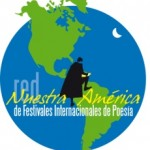

21 de enero, 2011
Editorial
Sumar sumándonos
Más lecturas que bases militares
Seguir buscando
Confirmaciones
Países que faltan
Editorial
Un festival que ocurre en muchas partes es un festival que tiene el mérito de ser posible gracias a los cientos de organizadores que lo hacen suyo. Esto significa que en ocho cientos cuarenta y tres lugares (ahora queremos decir miles) se organizaron lecturas de poesía. En cada una de ellas, leyeron sus creaciones varios poetas a un público que puede ir de diez a cuatrocientas personas (la cifra más alta de asistentes que se nos ha comunicado). Esto en sí es un triunfo; por la confianza que se impone como forma de comunicación, por la tribuna simultánea que se da a más de seis mil poetas y porque entrega una alta valoración al gesto de hacer poesía y pone al poeta en contacto con un público y a la vez confronta su creación con la de otros poetas.
Si en el peor de los casos el promedio de poetas participantes fueran cinco por lectura tendríamos un resultado de más de cuatro mil poetas leyendo en el plazo de una semana. No hay otro Festival que pueda decir lo mismo. Calcular el público asistente es algo más arriesgado, pero la cifra menos optimista sería veinte y cinco personas como promedio por lectura y nos arrojaría como público unas veinte y un mil personas. Nada despreciable.
Estos resultados son la prueba de que una idea, si se hace realidad, puede mover montañas. El mérito no es de nadie en particular y es de todos y cada uno en la medida de su participación. Cada cual sabe lo que ha hecho en este IV Festival pasado, para cada uno entonces lo que corresponda en certeza de que juntos podemos cambiar la vida.
Sumar sumándonos
La idea primitiva era simplemente ponernos de acuerdo en organizar unas cuantas lecturas en diversos puntos del planeta. En el arte de sumar, algunos suman personas robotizadas, armados con treinta kilos de carga mortal, ellos tienen las razones de sus amos que son gente simpática entre ellos. A la hora de defender sus privilegios, son mortales enemigos de la vida de los otros. Nosotros, poetas organizadores de un Festival que ocurre en todas partes, somos gente de paz, armados con ideas, sueños y lugares posibles y que esgrimen palabras destinadas a conmover, sembrar esperanzas, indicar un camino, valorar un ejemplo y sobre todo construirle ventanas a la vida.
En esto el arte mayor debe estar en sumar sumándonos. Algo simple de decir, algo complejo de entender y algo que en el mundo del consumo, la manipulación y los “valores” del mercado es imposible practicar. Sin embargo ahí están los resultados, que indican con fuego de poesía nueva, la posibilidad de entrar a las ciudades de la luz.
Hemos sumado sumándonos con nuestra cuota de capacidad organizativa y movilizadora, cuando logremos organizar miles de lecturas más que las bases militares, estaremos ciertos que la poesía ha logrado su objetivo de pacificar la tierra poblando el alma de la gente con su capacidad de amar puesta en movimiento.
Más lecturas que bases militares
¿Cuántas bases tiene USA en el mundo?:
Tiene 5.323 bases militares, de las cuales 4.500 están situadas en su propio territorio.
USA, tiene 823 bases fuera de su territorio, distribuidas así: 21 en América, de las cuales 7 están en Colombia; 513 están en Europa; 36 en Asia Central; 248 en Asia-Pacífico-Oceanía; 5 en África. Estas bases ocupan 2.5 millones de hectáreas en los 5 continentes.
En esta cuenta faltan 106 bases instaladas en Irak y Afganistán y las 20 bases que están situadas en Turquía.
Es posible que existan bases en varios países, las cuales no han sido detectadas o publicitadas, en estas posiblemente existan “cárceles” secretas, pistas clandestinas y todo un gran aparato montado para operaciones ultra-secretas.
http://www.aporrea.org/tiburon/a84216.html
Seguir buscando
La tarea es múltiple y requiere de nuestras mejores energías. Para sumar trescientos cincuenta y siete organizadores hemos debido enviar varios miles de coreos. Los que enviamos a grupos diversos, los que enviamos a nuestros contactos. A esto debemos sumar los que envía cada unos de ustedes, más lo que se publica en diversas páginas y blogs. Imposible saber a ciencia cierta a cuantas personas nos hemos dirigido ni cuánto de este esfuerzo ha caído entre cardos, piedras y arena.
Seguimos y en este seguir está el secreto: seguimos enviando la invitación a organizar lecturas, seguimos insistiendo en la necesidad de multiplicar los envíos, seguimos en la certeza de que los resultados nos dejan satisfechos, seguimos en nuestra ética de hacer poesía poetizando la vida, seguimos sumando voluntades y sus capacidades, seguimos respetando la diversidad, seguimos despertando el potencial de asumir nuestras circunstancias y hacer con ellas algo distinto. Seguimos…
La tarea es recurrir a la imaginación para inventar la forma nueva de seguir y obtener resultados que nos permitan llegar a otros miles de poetas, a otros miles de personas con el mensaje de darle a la paz una oportunidad, la oportunidad de darnos a nosotros el sublime momento de un mundo sin rencores, sin injusticias ni motivos para enfrentarnos a nuestros iguales. La única fuerza que hace posible lo imposible es el amor.
Confirmaciones
Desde 28 países tenemos confirmaciones. Es hora de mirar hacia adelante y lograr mover voluntades. Es hora de ir armando el programa, sin dejar de convocar a cientos de miles.
Alemania
Berlín: José Quevedo
Argentina
Ciudad de Buenos Aires: Yoli Fidanza
Ciudad de Buenos Aires: Bar notable El petit colo, Lavalle 505
La Boca: Galería Cultural
Ciudad de Buenos Aires: Escuela Nro.1-Dto.7mo.-EEM Nro. 3 .Región 17
Ciudad de Buenos Aires: Suipacha y Arroyo
Provincia de Buenos Aires
Berazategui: Margarita Mangione
Berisso: Club Estrella de Berisso. Biblioteca Popular Pestalozzi.
La Plata: Carlos Aprea
Lomas de Zamora: Beatriz Palmieri
Rojas Amalia Lateano
Catamarca: Rodolfo Lobo Molas
Córdoba, Alta Gracia: Café de las malas compañías – www.nocheliteraria.blogspot
Córdoba. Salón Auditorio de la Facultad de Lenguas –Universidad Nacional de Córdoba. Hernán Jaeggi, Secretaría de Extensión y Relaciones Internacionales de la Facultad de Lenguas de la Universidad Nacional de Córdoba.
Corrientes
Coronda, León Komorovski
Chaco
Resistencia
Chubut
Comodoro Rivadavia
Entre Ríos, La Paz, Marcelo Faure
Neuquén, Patagonia, Argentina Lilí Muñoz, Área Literatura Fundación Artística y Cultural Tribu Salvaje; Taller de Lectura del Café MNBA Neuquén; Delegación ad honorem IFLAC Neuquén
Río Negro
Viedma, Radio Encuentro de Viedma. -103.9
Santa Fe
Ceres
Funes
San Lorenzo
Tucumán
Tafi Viejo
Bélgica
Namur La Casa de Poesía de Namur y nuestro festival internacional de poesía.
Brasil
Ribeirao Preto Rosa Maria
Recife – Pernambuco Eduardo Monga
Bulgaria Violeta Boncheva.
Canada
Val-David, Quebec
Montreal, ensamble Acalanto
Montreal, SUR, Francisco Belmont
Toronto, Carlos Angulo Rivas
Ottawa, El dorado, Jorge Etcheverry
Colombia
Bogotá
Manizales Fundación La nave de papel
Pereira Fundación Arte & Ciencia, Café
Costa Rica
San José, Alex Roalva
Cuba
Radio: Programas Vitrales, El patio de la rueda
La Habana y otros municipios cubanos: Alex Pausides
Centro Habana: Proyecto Iskra: Escuela Felipe Poey, Zapata y Mazón,
Santa Clara: Arístides Vega
Granma: Niquero: Yoel Izaguirre
Manzanillo: Julio Sánchez
Bayamo: Abel Guerero
Pilón, Alejandro Aguilar
Chile
Santiago Organizadores: centro cultural tallersol
Santiago Alejandra Zarhi
Chipre Beste Sakalli
El Salvador La Cabuda Cartonera Editorial
España
Lucena
El Campello y a lo mejor Alicante Casa de la cultura
Sevilla
Ourense
Estados Unidos
California
Los Angeles-San Francisco Brigada de Poetas Revolucionarios
Miami Centro de “Performing Arts” Artspoken
Seattle Washington state
Guatemala
Ciudad de Guatemala, Brigada Literaria Roberto Obregón, del Frente Popular
Guinea, diallo ibrahima
Israel
Tel Aviv?
Italia
Folignano
Sassari
Udine
Venezia
México
Aguascalientes
Apozol, Zacatecas, México, Efraín Gutiérrez De la Isla
Baja California, Asociación de Escritores de Baja California Sur, AC
DF, Lucero Balcazar
Ensenada Baja California
Tuxtla Gutiérrez y San Cristobal de las Casas, Escuela de Lenguas C-I y Centro Intercultural Universitario (CEDUI)
Morelia, Michoacán, Taller Literario OMETEÓTL
Oaxaca de Juárez, Oaxaca Organizadores: Club de lectura “Ajito y sus amigos”, Sala de Lectura “Cánticos de vida y libertad” IGNACIO ROGELIO MORALES SÁNCHEZ
Sonora, Colectivo Cultural Hía Tehuikatzi con tres eventos en el FESTIVAL ENTRE EL 19 Y EL 24 DE MAYO
Mozambique
Maputo Organizadores: Showesia Organization
Nicaragua
Managua Instituto Nicaragüense de Cultura Hispánica
Panamá
Panamá Organizadores: Asociación Americana de Periodistas Bolivarianos, Capítulo de Panamá –
Perú
Lima
Trujillo
Maldonado
República de San Marino
Parco Pubblico Ausa
Puerto Rico
San Juan, Etna Iris Rivera
Uruguay
Montevideo
Piriápolis
Uzbekistan
Tashkent Organizers: Creative Writing and Translation Club
Venezuela
Mérida
Isla Margarita
Países que aún faltan por incorporarse:
Paraguay, Bolivia, Ecuador, Guyana Francesa, Surinam, Guyana, República Dominicana, Jamaica, Honduras, Belize, Portugal, Francia, Reino Unido, Holanda, Dinamarca, Suecia, Noruega, Finlandia, Rusia, Rumania, Ucrania, Hungría, China, Japón, Marruecos, Argelia, Egipto, Palestina…
La meta es encontrar contactos en estos países y enviar la convocatoria hasta encontrar eco.
Con la fuerza de todos y de cada uno, cuando en cada lugar demos por terminando este festival, cuyo fin es simplemente el comienzo del próximo, podremos sonreír con el alma.
A cuatro meses del V Festival Internacional de Poesía: Palabra en el Mundo
Mi aportación para este 2011 será la inclusión de Rusia. Ya mismo estoy mandando la convocatoria. Un abrazo compañeros.
Without infra, but with the hart into it. Poetry (and poets) for peace, social justice and the preservation of our common turf–the Earth